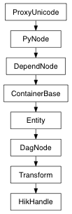

Enable or disable the limit value for the specified limit type.
| Parameters: |
|
|---|
Derived from api method maya.OpenMaya.MFnTransform.enableLimit
Returns the rotation used to orient the local rotation space. For the precise mathematics, refer to the transformation matrix details in the description section of MFnTransform .
| Parameters: |
|
|---|---|
| Return type: | Quaternion |
Derived from api method maya.OpenMaya.MSpace.rotateOrientation
Retrieve the rotation component of this transformation as a quaternion. The only valid transformation spaces for this method are MSpace::kTransform and MSpace::kWorld . All other spaces are treated as being equivalent to MSpace::kTransform .
| Parameters: |
|
|---|---|
| Return type: | (float, float, float, float) |
Derived from api method maya.OpenMaya.MSpace.getRotationQuaternion
Determine the current value of the specified limit.
| Parameters: |
|
|---|---|
| Return type: | float |
Derived from api method maya.OpenMaya.MFnTransform.limitValue
Relatively change the rotation of this transformation using a quaternion.
| Parameters: |
|
|---|
Derived from api method maya.OpenMaya.MSpace.rotateByQuaternion
Undo is not currently supported for this method
Change this transform to equal the given matrix.
| Parameters: |
|
|---|
Derived from api method maya.OpenMaya.MFnTransform.set
Set the rotation used to orient the local rotation space. For the precise mathematics, refer to the transformation matrix details in the description section of MFnTransform .
| Parameters: |
|
|---|
Derived from api method maya.OpenMaya.MSpace.setRotateOrientation
Change the rotation component of this transformation using a quaternion. The only valid transformation spaces for this method are MSpace::kTransform and MSpace::kWorld . All other spaces are treated as being equivalent to MSpace::kTransform .
| Parameters: |
|
|---|
Derived from api method maya.OpenMaya.MSpace.setRotationQuaternion
Retrieve the transformation matrix represented by this transform.
| Return type: | TransformationMatrix |
|---|
Derived from api method maya.OpenMaya.MFnTransform.transformation